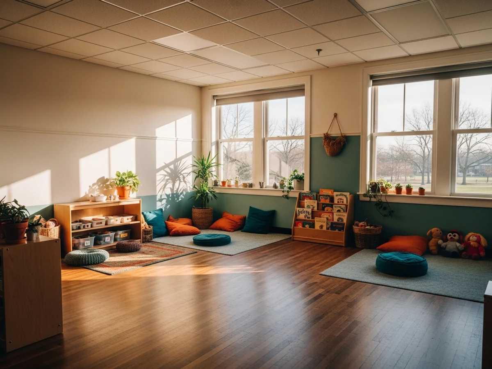
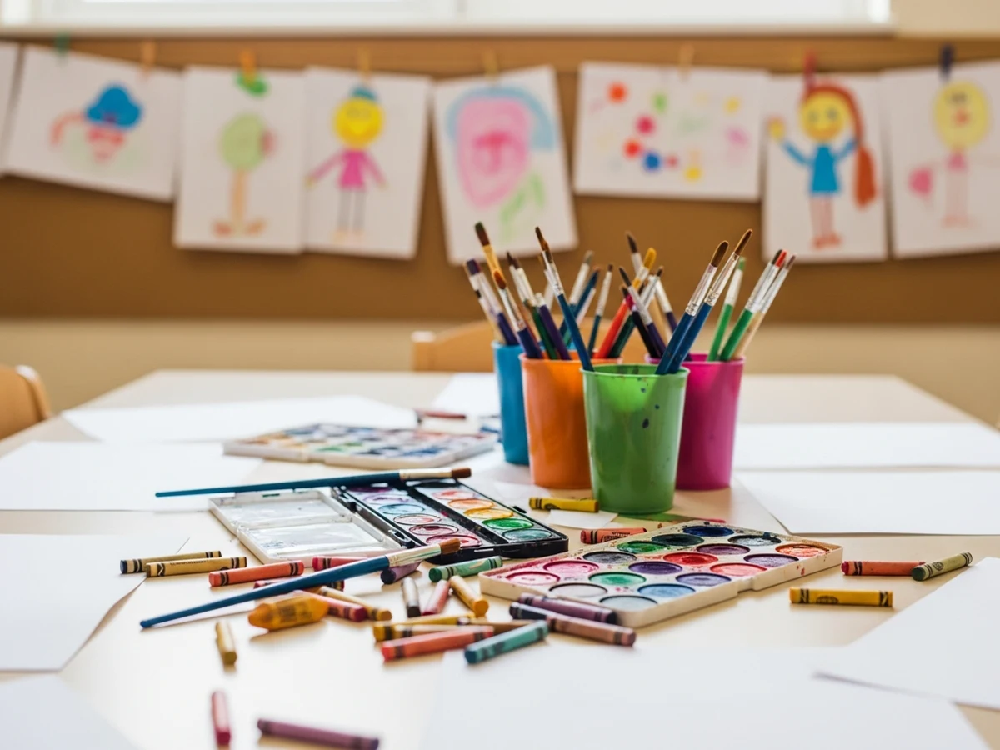
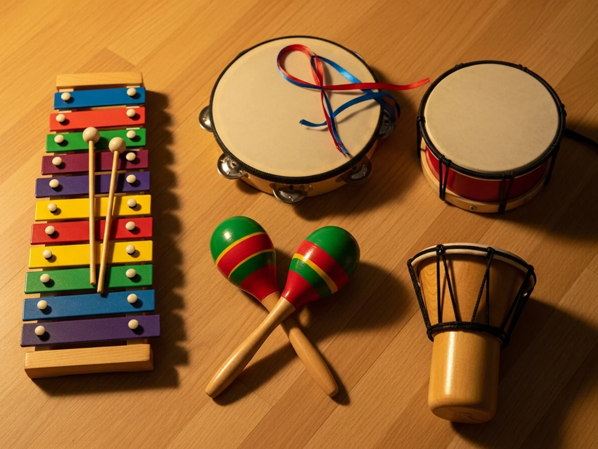
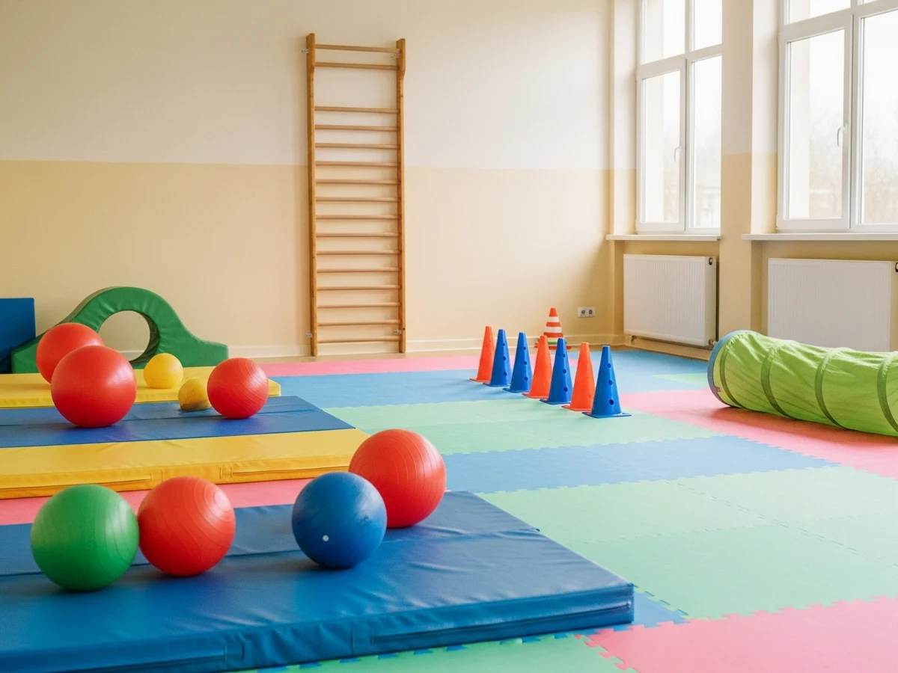
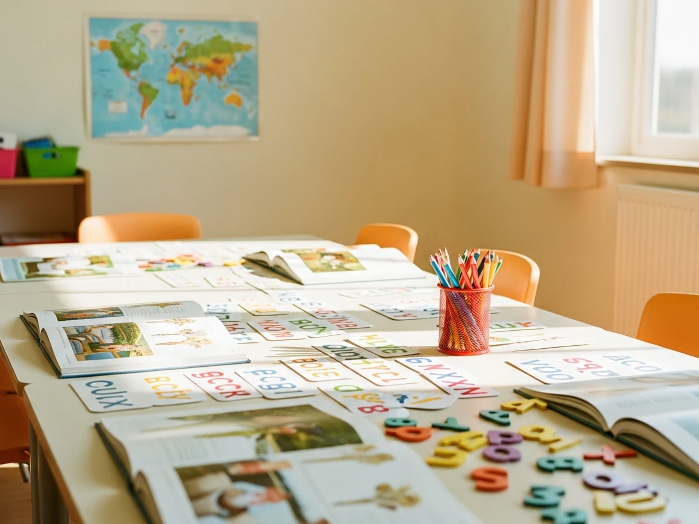
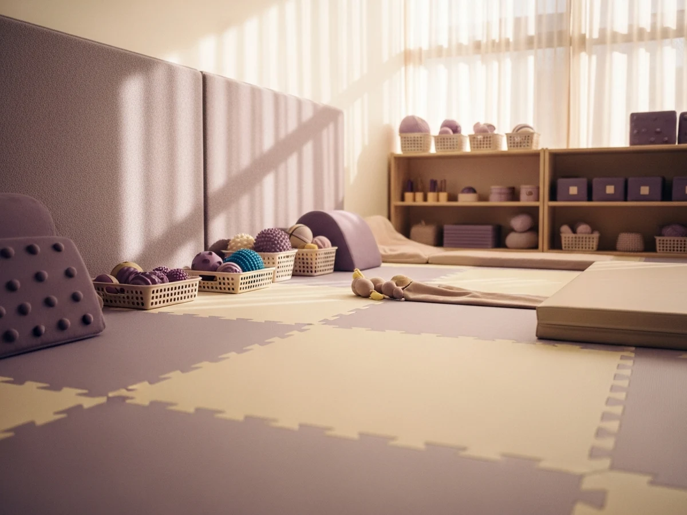

Galeria
Chwile z życia Dworku
Zajrzyj do naszego świata — zajęcia, zabawy i radosne momenty z codzienności przedszkola.






Kliknij zdjęcie, aby powiększyć. To miejsce wypełnimy prawdziwymi fotografiami z przedszkola.